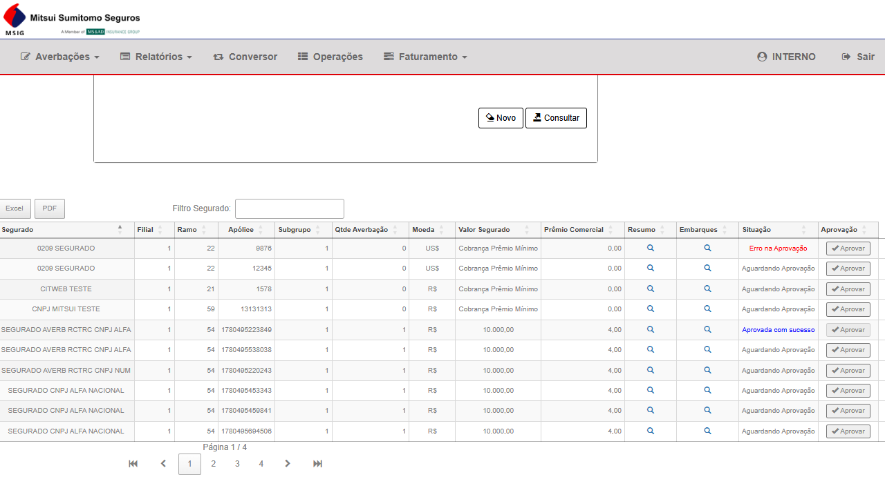
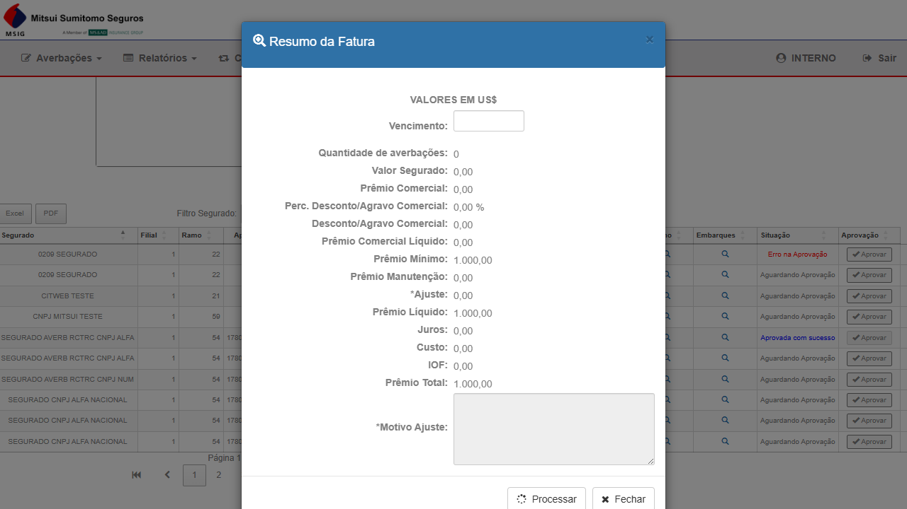
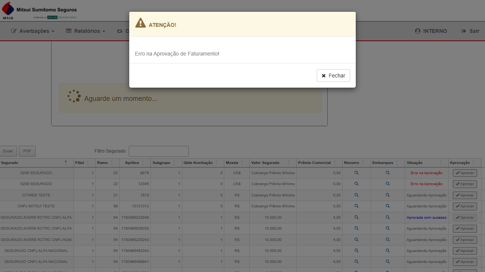

Bug Report NOVO
Encontrado durante reteste BUG-7521 · 23/06/2026
✗ "Erro na Aprovação de Faturamento!" ao processar registro com 0 averbações
CITNET MITSUI ALFA · Aprovação Prévia · Perfil INTERNO
Metadados
Descrição
Ao clicar Aprovar em um registro da grid de Aprovação Prévia que possui Qtde de Averbações = 0,
o modal "Resumo da Fatura" abre normalmente. Após preencher o Vencimento e clicar Processar,
o sistema exibe o modal "ATENÇÃO! Erro na Aprovação de Faturamento!" — uma mensagem de erro genérica
sem explicação ou diagnóstico.
O comportamento correto deveria ser uma das seguintes alternativas:
- O botão Aprovar deveria estar desabilitado (ou ausente) para registros com 0 averbações, impedindo que o usuário chegue ao modal
- OU o sistema deveria exibir uma mensagem de validação clara no modal: ex: "Não é possível aprovar: nenhuma averbação encontrada para o período"
- OU o sistema deveria processar normalmente, pois "Prêmio Mínimo" é cobrável mesmo sem averbações
Atualmente o registro fica com situação "Erro na Aprovação" permanentemente visível na grid, sem possibilidade de reversão visível para o usuário.
Passos para Reproduzir
- Acessar
https://mitsui-hml-faturamento.nsseg.com.br/alfa/citnet/
- Login com perfil INTERNO (usuário:
interno / senha: 11) — não selecionar filial na tela de login
- No menu, clicar em Faturamento → Aprovação
- Selecionar Filial: MATRIZ - 1
- Preencher Competência: 06/2026 (digitar dígito a dígito pela máscara)
- Clicar Consultar
- Aguardar grid carregar — localizar linha com Qtde Averbação = 0 (ex: "0209 SEGURADO" / Ramo 22 / Apólice 12345)
- Clicar no botão Aprovar da linha
- Modal "Resumo da Fatura" abre — verificar que Quantidade de averbações: 0 está visível
- Preencher campo Vencimento:
30/06/2026
- Clicar em Processar
Resultado Esperado vs. Obtido
✓ Esperado: O sistema processa com sucesso (pois há Prêmio Mínimo cobrado),
OU exibe mensagem de validação clara explicando a impossibilidade, OU o botão "Aprovar" está desabilitado para registros sem averbações.
✗ Obtido: Modal "ATENÇÃO! Erro na Aprovação de Faturamento!" — mensagem genérica, sem diagnóstico.
O registro fica com situação permanente "Erro na Aprovação" na grid. Reproduzível em todos os registros com Qtde Averbação = 0.
Escopo — Registros Afetados na Competência 06/2026
Verificado na grid — registros com Qtde Averbação = 0 que apresentam o mesmo comportamento:
- 0209 SEGURADO / Filial 1 / Ramo 22 / Apólice 9876 — Situação: "Erro na Aprovação" (travado do reteste anterior)
- 0209 SEGURADO / Filial 1 / Ramo 22 / Apólice 12345 — reproduzido e confirmado em 23/06/2026
- CITWEB TESTE / Filial 1 / Ramo 21 / Apólice 1578 — Qtde = 0, potencialmente afetado
- CNPJ MITSUI TESTE / Filial 1 / Ramo 59 / Apólice 13131313 — Qtde = 0, potencialmente afetado
O padrão é consistente: qualquer registro com "Cobrança Prêmio Mínimo" e 0 averbações falha ao ser processado.
Evidências
EV1 — Grid com situação "Erro na Aprovação" visível para Apólice 9876

Grid da Competência 06/2026 — linha 0209 SEGURADO / Ramo 22 / Apólice 9876 exibe "Erro na Aprovação" na coluna Situação
EV2 — Modal "Resumo da Fatura" com Quantidade de averbações: 0

Modal aberto para Apólice 12345 — confirma que sistema permite abrir o modal mesmo com 0 averbações; campo Vencimento preenchido com 30/06/2026 antes de Processar
EV3 — Modal de erro "ATENÇÃO! Erro na Aprovação de Faturamento!"

Mensagem de erro exibida após clicar Processar no registro com 0 averbações (Apólice 12345) — reprodução confirmada em 23/06/2026
⚠ Aguardando validação do Wesley antes de abrir card no AzDO.
Após validação: criar card Bug filho do PBI de sustentação, copiar AreaPath/IterationPath do pai.